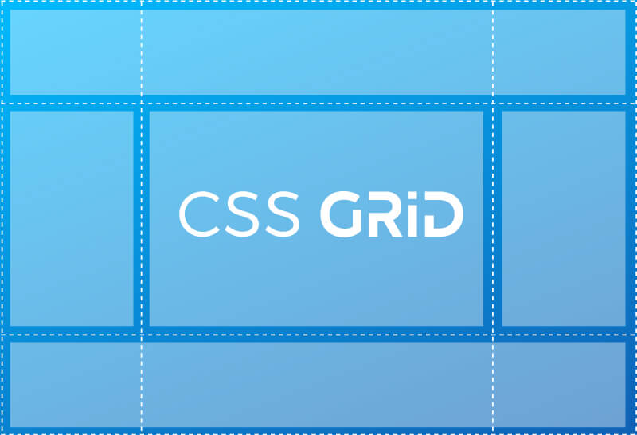

CSS Grid
Es una técnica de las Hojas de Estilo en Cascada que permite a los
desarrolladores web crear diseños complejos y adaptables con mayor
facilidad en todos los navegadores.1 Ha habido otros métodos para
controlar los métodos de diseño de páginas web, como las tablas, el
modelo de caja, y CSS flex. CSS grid no es actualmente un
estándar oficial (es una W3C Candidate Recommendation) aunque
ha sido adoptada por la mayoría de los principales
navegadores.
